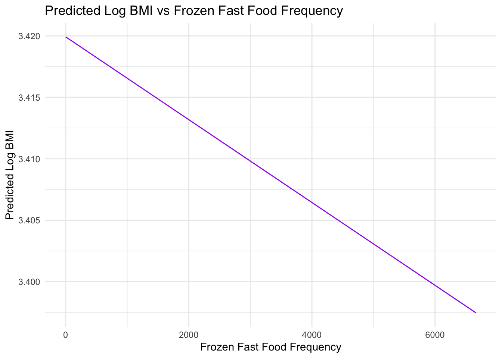

P8105 Fall 2023 Final Project Proposal
All Group Member Collaboration
2023-12-07
Group Members
- Yuandi Gao (yg2907)
- Yi Li (yl5214)
- Yingting Zhang (yz4434)
- Ruohan Hong (rh3132)
- Shiqi Wu (sw3737)
Import data from NHANES
import_df= function(path){
read_xpt(path)
}
obesity=
import_df(path='data/P_BMX.XPT') |>
full_join((import_df(path='data/P_DEMO.XPT')), by='SEQN') |>
full_join((import_df(path='data/P_PAQ.XPT')), by='SEQN')|>
full_join ((import_df(path='data/P_DBQ.XPT')), by='SEQN') |>
select (SEQN,RIAGENDR,RIDAGEYR,DMDMARTZ,INDFMPIR,RIDRETH3,DMDEDUC2,PAD680,BMXBMI,DBD900,DBD910) |>
filter(
!(DMDMARTZ %in% c('77','99','.') ),
!(INDFMPIR == '.'),
!(DMDEDUC2 %in% c('7','9','.') ),
!(PAD680 %in% c('7777', '9999', '.')),
!(BMXBMI =='.'),
!(DBD900 %in% c('7777', '9999', '.')),
!(DBD910 %in% c('7777', '9999', '.'))
) |>
rename(
gender=RIAGENDR,
age=RIDAGEYR,
marital_status=DMDMARTZ,
income_to_poverty=INDFMPIR,
race=RIDRETH3,
education=DMDEDUC2,
sedentary_activity=PAD680,
bmi=BMXBMI,
freq_fast_food=DBD900,
freq_frozen=DBD910
) |>
mutate(
gender = case_match(
gender,
1~"Male",
2~"Female"),
gender = as.factor(gender),
marital_status= case_match(
marital_status,
1~"Married",
2~"Widowed/Divorced/Separated",
3~"Never married"
),
race= case_match(
race,
1~"Mexican American",
2~"Other Hispanic",
3~"White",
4~"Black",
5~"Asian",
6~"Other"
),
education= case_match(
education,
1~"Less than 9th grade",
2~"9-11th grade",
3~"High school graduate" ,
4~"Some college or AA degree",
6~"College graduate or above"
),
obese =case_when(
bmi<30 ~ 'normal',
bmi>=30 ~'obese'
)
)# Histogram for BMI
ggplot(obesity, aes(x = bmi)) +
geom_histogram(binwidth = 1, fill = "blue", color = "black") +
labs(title = "Distribution of BMI", x = "BMI", y = "Count") +
theme_minimal()
# Density plot for BMI
ggplot(obesity, aes(x = bmi)) +
geom_density(fill = "blue", alpha = 0.5) +
labs(title = "Density Plot for BMI", x = "BMI", y = "Density") +
theme_minimal()
# Boxplot for BMI
ggplot(obesity, aes(y = bmi, x = 1)) +
geom_boxplot(fill = "blue", alpha = 0.5) +
labs(title = "Boxplot for BMI", x = "", y = "BMI") +
theme_minimal()
The histogram and density plot indicate that the distribution of
BMI is right-skewed, which is a common observation in
health-related data.
When the response variable in a regression model, BMI, in our case, is not normally distributed, we took a common approach is to apply a transformation to achieve normality. The logarithmic transformation is particularly useful because it is a monotonic transformation that can handle positive skewness by compressing the long tail and expanding the lower end of the distribution. This can make the distribution more symmetric and more closely approximate the normal distribution, which meets the assumptions of linear regression.
By transforming BMI using the natural logarithm, we can
stabilize the variance (homoscedasticity) and make the relationship
between the predictors and the response variable more linear. This is
beneficial because linear regression assumes a linear relationship
between the predictors and the outcome variable.
Cross-Validation and Model Comparison for Predicting BMI Based on Fast Food Frequency
First, we compare the three models for predictor fast food frequency
cv_df =
obesity |>
crossv_mc(n = 100) |>
mutate(
train = map(train, as_tibble),
test = map(test, as_tibble)
)
cv_results =
cv_df |>
mutate(
model_fast_crude = map(train, \(df) lm(log(bmi) ~ freq_fast_food, data = df) ),
model_fast_adjusted = map(train, \(df) lm(log(bmi) ~ freq_fast_food+age+gender+marital_status+ race+education+income_to_poverty, data = df)),
model_fast_inter = map(train, \(df) lm(log(bmi) ~ freq_fast_food*education+freq_fast_food*income_to_poverty+freq_fast_food+age+gender+marital_status+ race+education+income_to_poverty, data = df))
) |>
mutate(
rmse_fast_crude = map2_dbl(model_fast_crude, test, \(mod, df) rmse(mod, df)),
rmse_fast_adjusted = map2_dbl(model_fast_adjusted, test, \(mod, df) rmse(mod, df)),
rmse_fast_inter = map2_dbl(model_fast_inter, test, \(mod, df) rmse(mod, df))
)Plot of model comparison of fast food frequency
cv_results |>
select(starts_with("rmse")) |>
pivot_longer(
everything(),
names_to = "model_type",
values_to = "rmse",
names_prefix = "rmse_"
) |>
group_by(model_type) |>
summarize(m_rmse = mean(rmse))## # A tibble: 3 × 2
## model_type m_rmse
## <chr> <dbl>
## 1 fast_adjusted 0.302
## 2 fast_crude 0.458
## 3 fast_inter 0.338cv_results |>
select(starts_with("rmse")) |>
pivot_longer(
everything(),
names_to = "model_type",
values_to = "rmse",
names_prefix = "rmse_"
) |>
ggplot(aes(x = model_type, y = rmse)) +
geom_violin()
Interpretion of the fast food frequncy in terms of BMI:
fast_adjusted model has a lower median with most of its
data concentrated at the lower end of the rmse scale, which suggests
better predictive performance for most of its predictions compared to
the other models. fast_crude model has a wider spread of
values, indicating less consistency in predictive performance.
fast_inter has most of its data concentrated at the low end
like fast_adjusted, but the long tail indicates there are also quite a
few cases where its predictions are much worse. Considering this,
fast_adjusted seems to be the best model overall due to its
concentration of lower rmse values, although fast_inter may
also perform similarly well for the majority of predictions but has some
predictions with high error.
Interpretation of fast food variable:
For one unit increase in number of meals from fast food or pizza place, the bmi will decrease by 0.0026 kg/m^2, while adjusting for all other covariate in the model.
Cross-Validation and Model Comparison for Predicting BMI Based on Fast Food FrequencyBMI and predictor sendendary activity
# Histogram and Density Plot for Sedentary Activity
ggplot(obesity, aes(x = sedentary_activity)) +
geom_histogram(binwidth = 10, fill = "green", color = "black", alpha = 0.7) +
geom_density(alpha = 0.2, adjust = 1/5) +
labs(title = "Distribution of Sedentary Activity", x = "Sedentary Activity", y = "Density") +
theme_minimal()## Warning: Removed 3879 rows containing non-finite values (`stat_bin()`).## Warning: Removed 3879 rows containing non-finite values (`stat_density()`).
Step 1: Model building for sedentary activity with log(BMI)
cv_df_sedentary =
obesity |>
crossv_mc(n = 100) |>
mutate(
train = map(train, as_tibble),
test = map(test, as_tibble)
)
cv_results_sedentary =
cv_df_sedentary |>
mutate(
model_sed_crude = map(train, \(df) lm(log(bmi) ~ sedentary_activity, data = df)),
model_sed_adjusted = map(train, \(df) lm(log(bmi) ~ sedentary_activity+age+gender+marital_status+race+education+income_to_poverty, data = df)),
model_sed_inter = map(train, \(df) lm(log(bmi) ~ sedentary_activity*education+sedentary_activity*income_to_poverty+sedentary_activity+age+gender+marital_status+race+education+income_to_poverty, data = df))
) |>
mutate(
rmse_sed_crude = map2_dbl(model_sed_crude, test, \(mod, df) rmse(mod, df)),
rmse_sed_adjusted = map2_dbl(model_sed_adjusted, test, \(mod, df) rmse(mod, df)),
rmse_sed_inter = map2_dbl(model_sed_inter, test, \(mod, df) rmse(mod, df))
)cv_results_sedentary |>
select(starts_with("rmse_sed")) |>
pivot_longer(
everything(),
names_to = "model_type",
values_to = "rmse",
names_prefix = "rmse_sed_"
) |>
ggplot(aes(x = model_type, y = rmse)) +
geom_violin()
Summary of Cross validation Results- sendendary activity
cv_results_sedentary |>
select(starts_with("rmse_sed")) |>
pivot_longer(
everything(),
names_to = "model_type",
values_to = "rmse",
names_prefix = "rmse_sed_"
) |>
group_by(model_type) |>
summarize(m_rmse = mean(rmse))## # A tibble: 3 × 2
## model_type m_rmse
## <chr> <dbl>
## 1 adjusted 0.234
## 2 crude 0.237
## 3 inter 0.234In the context of these models, a lower RMSE indicates a more accurate prediction of BMI from the predictors used in the model.
The cross-validation results show that the mean RMSE for the adjusted and inter (interaction) models are both 0.235, while the crude model has a slightly higher RMSE of 0.237. In this case, both the adjusted and inter models perform slightly better than the crude model, as indicated by their lower RMSE values, which means they are, on average, closer to the true BMI values when log-transformed.
A valid reason we choose the adjusted model over the inter model, despite having the same RMSE, could be due to its simplicity and interpretability. The adjusted model includes additional covariates (age, gender, marital status, race, education, and income to poverty ratio) that are expected to be related to BMI based on previous research or theoretical considerations. Including these covariates allows the model to account for more variability in BMI that is explained by these factors.
Moreover, while interaction terms in the inter model may capture the combined effects of sedentary activity with other variables, they can make the model more complex and harder to interpret. We proceed the model statitics in adjusted model for sedentary activity.
# Step 1: Generate new data for plotting
new_data <- with(obesity, expand.grid(
sedentary_activity = seq(min(sedentary_activity, na.rm = TRUE), max(sedentary_activity, na.rm = TRUE), length.out = 100),
age = mean(age, na.rm = TRUE),
gender = "Female",
marital_status = "Married",
race = "White",
education = "Less than 9th grade",
income_to_poverty = mean(income_to_poverty, na.rm = TRUE)
))
# Step 2: Predict log(BMI) using the adjusted model and the new data
adjusted_model <- cv_results_sedentary$model_sed_adjusted[[1]]
new_data$log_bmi_pred <- predict(adjusted_model, newdata = new_data)
# Step 3: Create the plot
ggplot(new_data, aes(x = sedentary_activity, y = log_bmi_pred)) +
geom_line(color = "blue") +
labs(title = "Predicted Log BMI vs Sedentary Activity",
x = "Sedentary Activity",
y = "Predicted Log BMI") +
theme_minimal()
# Extract the summary of the 'adjusted' model
best_model_summary <- cv_results_sedentary$model_sed_adjusted[[1]] %>% summary()
# Print the summary which includes beta coefficients, p-values, etc.
print(best_model_summary)##
## Call:
## lm(formula = log(bmi) ~ sedentary_activity + age + gender + marital_status +
## race + education + income_to_poverty, data = df)
##
## Residuals:
## Min 1Q Median 3Q Max
## -0.74812 -0.15061 -0.00545 0.14724 1.12644
##
## Coefficients:
## Estimate Std. Error t value Pr(>|t|)
## (Intercept) 3.367e+00 1.820e-02 185.005 < 2e-16
## sedentary_activity 1.822e-04 1.874e-05 9.722 < 2e-16
## age 1.318e-04 2.368e-04 0.557 0.577705
## genderMale -3.950e-02 7.362e-03 -5.366 8.49e-08
## marital_statusNever married -2.843e-02 1.037e-02 -2.742 0.006136
## marital_statusWidowed/Divorced/Separated -2.251e-02 9.406e-03 -2.394 0.016725
## raceMexican American 4.998e-03 1.240e-02 0.403 0.686926
## raceOther -1.753e-01 1.513e-02 -11.581 < 2e-16
## raceOther Hispanic -1.543e-02 1.299e-02 -1.188 0.234941
## raceWhite -3.127e-02 9.159e-03 -3.414 0.000647
## educationHigh school graduate 8.977e-03 1.150e-02 0.781 0.435020
## educationLess than 9th grade 1.074e-02 1.573e-02 0.682 0.495077
## educationSome college or AA degree 2.085e-02 1.135e-02 1.837 0.066235
## income_to_poverty -2.149e-03 2.691e-03 -0.799 0.424598
##
## (Intercept) ***
## sedentary_activity ***
## age
## genderMale ***
## marital_statusNever married **
## marital_statusWidowed/Divorced/Separated *
## raceMexican American
## raceOther ***
## raceOther Hispanic
## raceWhite ***
## educationHigh school graduate
## educationLess than 9th grade
## educationSome college or AA degree .
## income_to_poverty
## ---
## Signif. codes: 0 '***' 0.001 '**' 0.01 '*' 0.05 '.' 0.1 ' ' 1
##
## Residual standard error: 0.2314 on 4084 degrees of freedom
## (5012 observations deleted due to missingness)
## Multiple R-squared: 0.06521, Adjusted R-squared: 0.06223
## F-statistic: 21.91 on 13 and 4084 DF, p-value: < 2.2e-16# Plotting the 'adjusted' model's fitted values vs. residuals
best_model <- cv_results_sedentary$model_sed_adjusted[[1]]
best_model_residuals <- resid(best_model)
best_model_fitted <- fitted(best_model)
# Create a residuals vs fitted values plot
residual_plot <- ggplot() +
geom_point(aes(x = best_model_fitted, y = best_model_residuals)) +
geom_hline(yintercept = 0, linetype = "dashed", color = "red") +
labs(title = "Residuals vs Fitted Values for Interaction Model",
x = "Fitted Values",
y = "Residuals") +
theme_minimal() +
geom_smooth(aes(x = best_model_fitted, y = best_model_residuals), method = "loess", se = FALSE)
# Print the residual plot
print(residual_plot)## `geom_smooth()` using formula = 'y ~ x'
Interpretation of the Adjusted model (activity)
Coefficients Interpretation on Log Scale:
Intercept: The estimated log(BMI) is
approximately 3.366 when all predictor variables are held at zero. To
interpret this on the original BMI scale, you would calculate
exp(3.366). This value represents the estimated BMI for the baseline
categories of all categorical predictors (usually the most common or
reference category) and zero for continuous predictors.
Sedentary Activity: The coefficient for sedentary
activity is positive (0.0001905) and statistically significant. This
suggests that for each unit increase in sedentary activity, the log(BMI)
increases by this amount. To interpret the effect on the original BMI
scale, consider that a small increase in the log(BMI)
corresponds to a percentage increase in BMI. Specifically, a one-unit
increase in sedentary activity is associated with approximately a
0.01905% increase in BMI.
Other Predictors: Similarly, for other continuous
predictors like age, the coefficient represents the percentage change in
BMI for a one-unit increase in that predictor. For categorical
predictors like gender, marital status, and race, the coefficients
represent the percentage difference in BMI compared to the reference
category.
Model Fit and R-squared: The R-squared
value (0.06851) indicates that about 6.851% of the variability in
log-transformed BMI is explained by the model. While this might seem
low, it’s not uncommon in behavioral and social science research where
many unmeasured factors can influence the outcome. Statistical
Significance:
The significance of the coefficients suggests that these factors have a statistically significant association with BMI. However, the magnitude of these effects might be small, especially for variables like age and income_to_poverty ratio.
Overall Interpretation: The significant predictors in the model, like
sedentary activity and gender, indicate
factors that are associated with BMI. However, the small
R-squared value suggests that many other factors not included in the
model also influence BMI. Given that the response variable
is log-transformed, the interpretation is in terms of percentage change
(for continuous predictors) or relative percentage difference (for
categorical predictors) in BMI.
Cross-Validation and Model Buildup for Predicting BMI Based on Frozen Fast Food Frequency
cv_df_frozen =
obesity |>
crossv_mc(n = 100) |>
mutate(
train = map(train, as_tibble),
test = map(test, as_tibble)
)Model building for frozen fast food with log(BMI)
cv_results_frozen =
cv_df_frozen |>
mutate(
model_frozen_crude = map(train, \(df) lm(log(bmi) ~ freq_frozen, data = df)),
model_frozen_adjusted = map(train, \(df) lm(log(bmi) ~ freq_frozen + age + gender + marital_status + race + education + income_to_poverty, data = df)),
model_frozen_inter = map(train, \(df) lm(log(bmi) ~ freq_frozen * education + freq_frozen * income_to_poverty + freq_frozen + age + gender + marital_status + race + education + income_to_poverty, data = df))
) |>
mutate(
rmse_frozen_crude = map2_dbl(model_frozen_crude, test, \(mod, df) rmse(mod, df)),
rmse_frozen_adjusted = map2_dbl(model_frozen_adjusted, test, \(mod, df) rmse(mod, df)),
rmse_frozen_inter = map2_dbl(model_frozen_inter, test, \(mod, df) rmse(mod, df))
)Cross-validation comparison
cv_results_frozen |>
select(starts_with("rmse_frozen")) |>
pivot_longer(
everything(),
names_to = "model_type",
values_to = "rmse",
names_prefix = "rmse_frozen_"
) |>
ggplot(aes(x = model_type, y = rmse)) +
geom_violin()
Summary of Cross-Validation Results
cv_results_frozen |>
select(starts_with("rmse_frozen")) |>
pivot_longer(
everything(),
names_to = "model_type",
values_to = "rmse",
names_prefix = "rmse_frozen_"
) |>
group_by(model_type) |>
summarize(m_rmse = mean(rmse))## # A tibble: 3 × 2
## model_type m_rmse
## <chr> <dbl>
## 1 adjusted 0.253
## 2 crude 0.309
## 3 inter 0.331Model Plot for Adjusted Model
Generate new data for plotting
obesity$marital_status <- factor(obesity$marital_status)
obesity$race <- factor(obesity$race)
obesity$education <- factor(obesity$education)
new_data_frozen <- expand.grid(
freq_frozen = seq(min(obesity$freq_frozen, na.rm = TRUE), max(obesity$freq_frozen, na.rm = TRUE), length.out = 100),
age = mean(obesity$age, na.rm = TRUE),
gender = levels(obesity$gender)[1],
marital_status = levels(obesity$marital_status)[1],
race = levels(obesity$race)[1],
education = levels(obesity$education)[1],
income_to_poverty = mean(obesity$income_to_poverty, na.rm = TRUE)
)
str(new_data_frozen)## 'data.frame': 100 obs. of 7 variables:
## $ freq_frozen : num 0 67.3 134.7 202 269.3 ...
## $ age : num 35.6 35.6 35.6 35.6 35.6 ...
## $ gender : Factor w/ 1 level "Female": 1 1 1 1 1 1 1 1 1 1 ...
## $ marital_status : Factor w/ 1 level "Married": 1 1 1 1 1 1 1 1 1 1 ...
## $ race : Factor w/ 1 level "Black": 1 1 1 1 1 1 1 1 1 1 ...
## $ education : Factor w/ 1 level "9-11th grade": 1 1 1 1 1 1 1 1 1 1 ...
## $ income_to_poverty: num 2.42 2.42 2.42 2.42 2.42 ...
## - attr(*, "out.attrs")=List of 2
## ..$ dim : Named int [1:7] 100 1 1 1 1 1 1
## .. ..- attr(*, "names")= chr [1:7] "freq_frozen" "age" "gender" "marital_status" ...
## ..$ dimnames:List of 7
## .. ..$ freq_frozen : chr [1:100] "freq_frozen= 0.00000" "freq_frozen= 67.33333" "freq_frozen= 134.66667" "freq_frozen= 202.00000" ...
## .. ..$ age : chr "age=35.62302"
## .. ..$ gender : chr "gender=Female"
## .. ..$ marital_status : chr "marital_status=Married"
## .. ..$ race : chr "race=Black"
## .. ..$ education : chr "education=9-11th grade"
## .. ..$ income_to_poverty: chr "income_to_poverty=2.42299"Predict log(BMI) using the adjusted model and the new data
adjusted_model_frozen <- cv_results_frozen$model_frozen_adjusted[[1]]
new_data_frozen$log_bmi_pred <- predict(adjusted_model_frozen, newdata = new_data_frozen)
# Plot the predicted values
ggplot(new_data_frozen, aes(x = freq_frozen, y = log_bmi_pred)) +
geom_line(color = "purple") +
labs(title = "Predicted Log BMI vs Frozen Fast Food Frequency",
x = "Frozen Fast Food Frequency",
y = "Predicted Log BMI") +
theme_minimal() # Summary of the best ‘adjusted’ model from cross-validation
best_adjusted_model_summary <- cv_results_frozen$model_frozen_adjusted[[1]] %>% summary()
# Print the summary which includes coefficients, R-squared, p-values...
print(best_adjusted_model_summary)##
## Call:
## lm(formula = log(bmi) ~ freq_frozen + age + gender + marital_status +
## race + education + income_to_poverty, data = df)
##
## Residuals:
## Min 1Q Median 3Q Max
## -0.78273 -0.15920 -0.00797 0.14771 1.09279
##
## Coefficients:
## Estimate Std. Error t value Pr(>|t|)
## (Intercept) 3.430e+00 1.843e-02 186.107 < 2e-16
## freq_frozen -5.871e-05 3.544e-05 -1.656 0.097744
## age 1.270e-04 2.438e-04 0.521 0.602499
## genderMale -4.524e-02 7.539e-03 -6.001 2.13e-09
## marital_statusNever married -2.858e-02 1.067e-02 -2.679 0.007415
## marital_statusWidowed/Divorced/Separated -2.529e-02 9.604e-03 -2.633 0.008490
## raceMexican American -5.550e-03 1.287e-02 -0.431 0.666329
## raceOther -1.782e-01 1.549e-02 -11.504 < 2e-16
## raceOther Hispanic -3.082e-02 1.340e-02 -2.300 0.021499
## raceWhite -3.408e-02 9.412e-03 -3.621 0.000297
## educationHigh school graduate 1.418e-02 1.198e-02 1.184 0.236604
## educationLess than 9th grade -1.032e-03 1.604e-02 -0.064 0.948703
## educationSome college or AA degree 2.622e-02 1.181e-02 2.221 0.026395
## income_to_poverty 9.579e-05 2.751e-03 0.035 0.972221
##
## (Intercept) ***
## freq_frozen .
## age
## genderMale ***
## marital_statusNever married **
## marital_statusWidowed/Divorced/Separated **
## raceMexican American
## raceOther ***
## raceOther Hispanic *
## raceWhite ***
## educationHigh school graduate
## educationLess than 9th grade
## educationSome college or AA degree *
## income_to_poverty
## ---
## Signif. codes: 0 '***' 0.001 '**' 0.01 '*' 0.05 '.' 0.1 ' ' 1
##
## Residual standard error: 0.2362 on 4045 degrees of freedom
## (5051 observations deleted due to missingness)
## Multiple R-squared: 0.04463, Adjusted R-squared: 0.04156
## F-statistic: 14.54 on 13 and 4045 DF, p-value: < 2.2e-16Create a residuals plot for the ‘adjusted’ model
adjusted_model <- cv_results_frozen$model_frozen_adjusted[[1]]
adjusted_model_residuals <- resid(adjusted_model)
adjusted_model_fitted <- fitted(adjusted_model)
# Plot the residuals against the fitted values
residual_plot <- ggplot() +
geom_point(aes(x = adjusted_model_fitted, y = adjusted_model_residuals)) +
geom_hline(yintercept = 0, linetype = "dashed", color = "red") +
labs(title = "Residuals vs Fitted Values for Adjusted Model",
x = "Fitted Values",
y = "Residuals") +
theme_minimal() +
geom_smooth(aes(x = adjusted_model_fitted, y = adjusted_model_residuals), method = "loess", se = FALSE)
# Print the residual plot
print(residual_plot)## `geom_smooth()` using formula = 'y ~ x'Regression Models and Diagnostics
Model1: log(BMI)=freq_fast
# Crude model for freq_fast_food
freq_fast_crude = lm(log(bmi) ~ freq_fast_food, data = obesity)
obesity |> modelr::add_residuals(freq_fast_crude) |>
ggplot(aes(sample = resid))+stat_qq()+stat_qq_line()## Warning: Removed 2345 rows containing non-finite values (`stat_qq()`).## Warning: Removed 2345 rows containing non-finite values (`stat_qq_line()`).
Model2: log(BMI)=sedentary activity
# Crude model for inactivity
inactivity_crude = lm(log(bmi) ~ sedentary_activity, data = obesity)
obesity |> modelr::add_residuals(inactivity_crude) |>
ggplot(aes(sample = resid))+stat_qq()+stat_qq_line()## Warning: Removed 3879 rows containing non-finite values (`stat_qq()`).## Warning: Removed 3879 rows containing non-finite values (`stat_qq_line()`).
Model3: log(BMI)=freqence of frozen
# Crude model for freq_frozen
freq_frozen_crude = lm(log(bmi) ~ freq_frozen, data = obesity)
obesity |> modelr::add_residuals(freq_frozen_crude) |>
ggplot(aes(sample = resid))+stat_qq()+stat_qq_line()## Warning: Removed 38 rows containing non-finite values (`stat_qq()`).## Warning: Removed 38 rows containing non-finite values (`stat_qq_line()`).